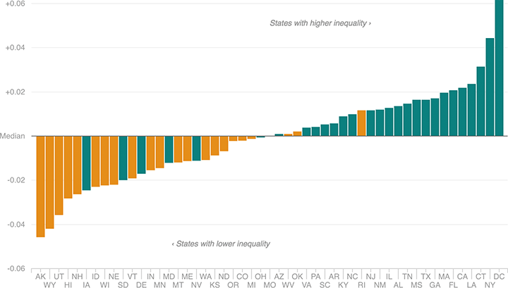

In Democratic Primaries, Clinton Won The Most Unequal States
This chart shows states’ inequality as measured by the Gini index, a widely used statistic that measures a place’s inequality on a scale of 0 (perfectly equal) to 1 (perfectly unequal). Clinton won the states that are much higher than the median (that is, the bars that are sticking up), while Sanders tended to win states that are far lower than the median (the ones pointing down).
